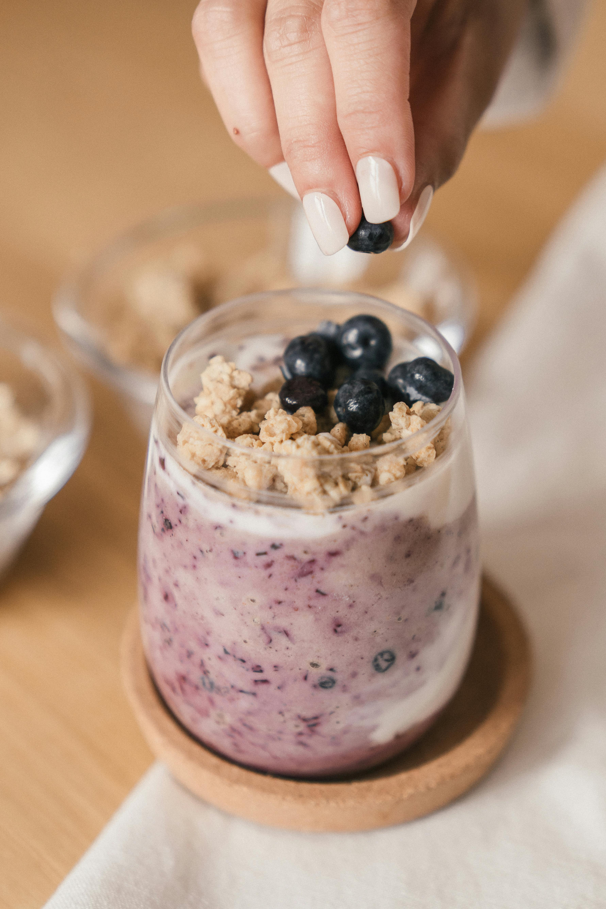

Easy Overnight Oats
Submitted by sonjagroset on allrecipes.
Description
Overnight oats are the perfect make-ahead breakfast that'll keep you full until lunch.
Ingredients
For 1 servings
- 1/3 cup milk
- 1/4 cup Greek yogurt
- 1/4 cup rolled oats
- 2 teaspoons honey
- 2 teaspoons chia seeds
- 1/4 teaspoon ground cinnamon or more to taste
- 1/4 cup fresh blueberries
Steps
- Gather all ingredients.
- Combine milk, yogurt, oats, honey, chia seeds, and cinnamon in a 1/2-pint jar with a lid; cover and shake until combined.
- Fold in blueberries.
- Cover and refrigerate, 8 hours to overnight. Enjoy!
Nutrition Facts
Serving Per Recipe: 1
- Calories: 255
- Total Fat: 6g
- Saturated Fat: 2g
- Cholesterol: 9mg
- Total Carbohydrate: 40g
- Dietary Fiber: 6g
- Total Sugars: 21g
- Protein: 13g
- Vitamin C: 4mg
- Calcium: 230mg
- Iron: 2mg
- Potassium: 337mg